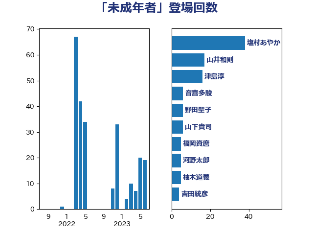

単語「未成年者」

| 塩村あやか | 立憲民主党 | 38 回 |
| 山井和則 | 立憲民主党 | 17 回 |
| 津島淳 | 自由民主党 | 16 回 |
| 嘉田由紀子 | 無所属 | 14 回 |
| 山下貴司 | 自由民主党 | 6 回 |
| 野田聖子 | 自由民主党 | 6 回 |
| 古屋範子 | 公明党 | 4 回 |
| 岸真紀子 | 立憲民主党 | 4 回 |
| 柚木道義 | 立憲民主党 | 4 回 |
| 上川陽子 | 自由民主党 | 3 回 |
| 串田誠一 | 日本維新の会 | 3 回 |
| 大西健介 | 立憲民主党 | 3 回 |
| 赤澤亮正 | 自由民主党 | 3 回 |
| 吉田統彦 | 立憲民主党 | 2 回 |
| 山添拓 | 日本共産党 | 2 回 |
| 鈴木英敬 | 自由民主党 | 2 回 |
| 伊佐進一 | 公明党 | 1 回 |
| 古川禎久 | 自由民主党 | 1 回 |
| 安江伸夫 | 公明党 | 1 回 |
| 宮崎政久 | 自由民主党 | 1 回 |
| 山田勝彦 | 立憲民主党 | 1 回 |
| 山田賢司 | 自由民主党 | 1 回 |
| 山際大志郎 | 自由民主党 | 1 回 |
| 岩渕友 | 日本共産党 | 1 回 |
| 岸田文雄 | 自由民主党 | 1 回 |
| 平沼正二郎 | 自由民主党 | 1 回 |
| 柳ヶ瀬裕文 | 日本維新の会 | 1 回 |
| 森山浩行 | 立憲民主党 | 1 回 |
| 熊野正士 | 公明党 | 1 回 |
| 田村貴昭 | 日本共産党 | 1 回 |
| 落合貴之 | 立憲民主党 | 1 回 |
| 足立康史 | 日本維新の会 | 1 回 |
| 野間健 | 立憲民主党 | 1 回 |
| 鎌田さゆり | 立憲民主党 | 1 回 |
| 長浜博行 | 無所属 | 1 回 |
| 高見康裕 | 自由民主党 | 1 回 |
| 鰐淵洋子 | 公明党 | 1 回 |